Materi Lengkap
-
Buat Judul Kolom:
A1: NoB1: NamaC1: KelasD1: Nilai
-
Isi Nomor Urut:
- Ketik 1 pada
A2. - Ketik 2 pada
A3. -
Blok
A2:A3lalu tarik AutoFill Handle (kotak kecil di pojok kanan bawah sel) hinggaA11.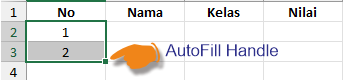
- Ketik 1 pada
- Masukkan Data Siswa pada Kolom Nama, Kelas, dan Nilai.

- Format Kolom Nilai menjadi 2 Angka Desimal:
- Blok
D2:D12 - Klik Tab Home → grup Number.
- Pilih Number.
- Atur Decimal Places menjadi 2.
- Blok
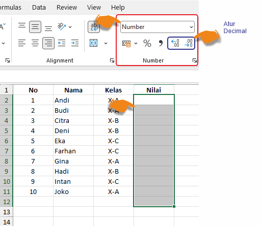
- Hitung Total Nilai:
- Pada sel
D12ketik:=SUM(D2:D11) - Range / Blok
D2:D11 - Tekan Enter.
Dengan Data di atas, Hasilnya: 842,75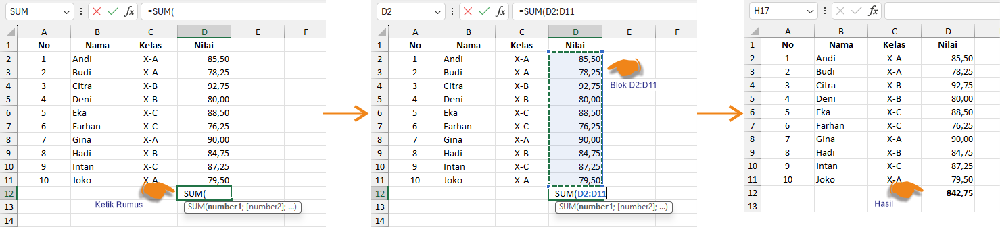
- Pada sel
Dalam mengetik rumus Excel, terdapat perbedaan pemisah (separator) antar versi/region:
| Versi Excel | Pemisah Argument | Contoh |
|---|---|---|
| Excel Indonesia / Eropa | Titik koma ; |
=SUM(B2;B13) |
| Excel Inggris / Amerika | Koma , |
=SUM(B2,B13) |
Contoh perbedaan pada rumus dengan 2 argument:
- Indonesia:
=IF(C3>=75;"LULUS";"TIDAK LULUS") - Amerika:
=IF(C3>=75,"LULUS","TIDAK LULUS")
Tips: Jika rumus error atau tidak bisa diketik,
cek File → Options → Advanced → Use system separators, atau ganti
; dengan , (atau sebaliknya) sesuai versi Excel Anda.
- AutoFill data bulanan.
- Fungsi
SUM(). - Fungsi
AVERAGE(). - Fungsi
MAX(). - Referensi absolut
$C$1. - Format mata uang (Currency/Accounting).
- Menyalin rumus dengan Fill Handle.
-
Buat judul kolom di baris 1:
A1: BulanB1: PenjualanC1: Komisi (%)
-
Isi data Komisi di sel
C1:- Ketik
5%atau0,05pada selC1. - Sel ini akan dirujuk dengan referensi absolut
$C$1nanti.
- Ketik
-
Isi data bulan di kolom A (A2:A13):
- Ketik
JanuaridiA2. - Ketik
FebruaridiA3. - Blok
A2:A3lalu tarik AutoFill Handle hinggaA13(Desember).
- Ketik
-
Isi data Penjualan di kolom B (B2:B13):
Masukkan nilai penjualan contoh berikut:Sel Bulan Penjualan (Rp) B2Januari 12.500.000 B3Februari 14.200.000 B4Maret 13.800.000 B5April 15.000.000 B6Mei 16.500.000 B7Juni 14.800.000 B8Juli 15.300.000 B9Agustus 16.000.000 B10September 14.500.000 B11Oktober 17.200.000 B12November 18.000.000 B13Desember 18.500.000

Pada sel B14: =SUM(B2:B13)
Hasil: 180300000 atau Rp 180.300.000 setelah diformat Currency.
Pada sel B16: =AVERAGE(B2:B13)
Hasil: 15025000 atau Rp 15.025.000
Pada sel B17: =MAX(B2:B13)
Hasil: 18500000 atau Rp 18.500.000
Tambahkan kolom Komisi pada kolom C (lihat di gambar).
Pada sel C2 ketik:
=B2*$C$1
Lalu salin ke bawah hingga C13 menggunakan Fill Handle (klik sel C2, tarik kotak kecil pojok kanan bawah hingga C13).
Mengapa menggunakan
$C$1? Tanda
$ membuat referensi menjadi absolut,
sehingga saat rumus disalin ke bawah, Excel
tetap mengambil nilai komisi dari sel C1.
Contoh:
=B3*$C$1 =B4*$C$1 =B5*$C$1
- Blok sel B2:C13.
- Tab Home → grup Number.
- Pilih Currency atau Accounting.
- Pilih simbol Rp (Indonesian Rupiah).
- Atur jumlah desimal sesuai kebutuhan (biasanya 0 atau 2).
.accordion-flush class. This is the second item’s accordion body. Let’s imagine this being
filled with some actual content.
.accordion-flush class. This is the third item’s accordion body. Nothing more exciting
happening here in terms of content, but just filling up the space to make it look, at least at first
glance, a bit more representative of how this would look in a real-world application.
.accordion-flush class. This is the third item’s accordion body. Nothing more exciting
happening here in terms of content, but just filling up the space to make it look, at least at first
glance, a bit more representative of how this would look in a real-world application.
-
Dasar: Buat tabel
data siswa 10 baris (Nama, Kelas, Nilai). Gunakan AutoFill
untuk no urut. Format kolom Nilai dengan Number 2 desimal.
Hitung total nilai dengan
=SUM(D2:D11).Langkah Pengerjaan-
Buat judul kolom:
- A1: No
- B1: Nama
- C1: Kelas
- D1: Nilai
-
Isi nomor urut:
- Ketik 1 pada A2.
- Ketik 2 pada A3.
- Blok A2:A3 lalu tarik AutoFill Handle (kotak kecil di pojok kanan bawah sel) hingga A11.
- Masukkan data siswa pada kolom Nama, Kelas, dan Nilai.
-
Format kolom Nilai menjadi 2 angka
desimal:
- Blok D2:D11.
- Klik Tab Home → grup Number.
- Pilih Number.
- Atur Decimal Places menjadi 2.
-
Hitung total nilai:
- Pada sel D12 ketik: =SUM(D2:D11)
- Tekan Enter.
Dengan data di atas, hasilnya: 842,75
Catatan Penting — Pemisah Argument Rumus ExcelDalam mengetik rumus Excel, terdapat perbedaan pemisah (separator) antar versi/region:
Versi Excel Pemisah Argument Contoh Excel Indonesia / Eropa Titik koma ;=SUM(B2:B13)Excel Inggris / Amerika Koma ,=SUM(B2:B13)Contoh perbedaan pada rumus dengan 2 argument:
- Indonesia:
=IF(C3>=75;"LULUS";"TIDAK LULUS") - Amerika:
=IF(C3>=75,"LULUS","TIDAK LULUS")
Tips: Jika rumus error atau tidak bisa diketik, cek File → Options → Advanced → Use system separators, atau ganti
;dengan,(atau sebaliknya) sesuai versi Excel Anda.Hasil Akhir:

-
Buat judul kolom:
-
Menengah: Buat tabel
penjualan 12 bulan. Hitung total tahunan
=SUM(B2:B13), rata-rata=AVERAGE(B2:B13), tertinggi=MAX(B2:B13). Komisi=B2*$C$1(absolut). Format currency.Kompetensi yang Dipelajari:- AutoFill data bulanan.
- Fungsi
SUM(). - Fungsi
AVERAGE(). - Fungsi
MAX(). - Referensi absolut
$C$1. - Format mata uang (Currency/Accounting).
- Menyalin rumus dengan Fill Handle.
Buat Tabel Penjualan Tahunan-
Buat judul kolom di baris 1:
A1: BulanB1: PenjualanC1: Komisi (%)
-
Isi data Komisi di sel
C1:- Ketik
5%atau0,05pada selC1. - Sel ini akan dirujuk dengan referensi absolut
$C$1nanti.
- Ketik
-
Isi data bulan di kolom A (A2:A13):
- Ketik
JanuaridiA2. - Ketik
FebruaridiA3. - Blok
A2:A3lalu tarik AutoFill Handle hinggaA13(Desember).
- Ketik
-
Isi data Penjualan di kolom B (B2:B13):
Masukkan nilai penjualan contoh berikut:Sel Bulan Penjualan (Rp) B2Januari 12.500.000 B3Februari 14.200.000 B4Maret 13.800.000 B5April 15.000.000 B6Mei 16.500.000 B7Juni 14.800.000 B8Juli 15.300.000 B9Agustus 16.000.000 B10September 14.500.000 B11Oktober 17.200.000 B12November 18.000.000 B13Desember 18.500.000
Tabel Penjualan Tahunan
Menghitung Total Penjualan Tahunan
Pada sel B14: =SUM(B2:B13)
Hasil: 180300000 atau Rp 180.300.000 setelah diformat Currency.Menghitung Rata-rata Penjualan
Pada sel B16: =AVERAGE(B2:B13)
Hasil: 15025000 atau Rp 15.025.000Mencari Penjualan Tertinggi
Pada sel B17: =MAX(B2:B13)
Hasil: 18500000 atau Rp 18.500.000Menghitung Komisi (Referensi Absolut)Format Currency
Tambahkan kolom Komisi pada kolom C (lihat di gambar).
Pada sel C2 ketik:=B2*$C$1
Lalu salin ke bawah hingga C13 menggunakan Fill Handle (klik sel C2, tarik kotak kecil pojok kanan bawah hingga C13).
Mengapa menggunakan$C$1?
Tanda$membuat referensi menjadi absolut, sehingga saat rumus disalin ke bawah, Excel
tetap mengambil nilai komisi dari sel C1.
Contoh:
=B3*$C$1
=B4*$C$1
=B5*$C$1- Blok sel B2:C13.
- Tab Home → grup Number.
- Pilih Currency atau Accounting.
- Pilih simbol Rp (Indonesian Rupiah).
- Atur jumlah desimal sesuai kebutuhan (biasanya 0 atau 2).
Hasil Akhir:
-
Lanjutan: Buat
laporan keuangan pribadi 1 bulan. Gunakan
=ROUNDuntuk pembulatan,=TODAY()untuk tanggal otomatis,=COUNTIFuntuk menghitung kategori pengeluaran. Terapkan Conditional Formatting untuk sel negatif (merah).Tujuan
Murid dapat menggunakan:
- Fungsi TODAY()
- Fungsi ROUND()
- Fungsi COUNTIF()
- Conditional Formatting
- Format Currency
Buat Tabel Laporan Keuangan Pribadi-
Buat bagian Tanggal (baris 1):
A1:Tanggal LaporanB1: ketik=TODAY()(akan ditampilkan tanggal hari ini)
-
Buat header kolom di baris 3:
A3: NoB3: KategoriC3: DeskripsiD3: Jumlah
-
Isi 10 baris data pengeluaran (baris 4-13):
No Kategori (B) Deskripsi (C) Jumlah (D) 1 Makan Nasi Goreng 25.000 2 Transport Bensin 50.000 3 Belanja Sabun 15.000 4 Makan Mie Ayam 20.000 5 Tagihan Listrik 150.000 6 Transport Grab 35.000 7 Hiburan Nonton Bioskop 75.000 8 Makan Kopi 18.000 9 Belanja Shampoo 22.000 10 Makan Makan Siang 35.000
Langkah pengerjaan:
-
Membuat Tabel Laporan Keuangan
Setelah membuat tabel sesuai struktur di atas, pada sel B1 ketik rumus:=TODAY()
Hasil akan menampilkan tanggal hari ini secara otomatis.
Formatkan sebagai Short Date- Pada Tab Home di bagian group Number
- Pilih Short Date

-
Total Pengeluaran
Pada sel D14:=SUM(D4:D13)
Catatan: Kolom D berisi data Jumlah pengeluaran. -
Pembulatan dengan ROUND
Misalkan hasil total berada di D16.
Pada D16:=ROUND(D14;-3)
Artinya: Dibulatkan ke ribuan terdekat.
Contoh:
845.600 → 846.000
842.100 → 842.000 -
Menghitung Jumlah Pengeluaran per Kategori
Catatan: Kolom B berisi data Kategori (Makan, Transport, Belanja, Tagihan, Hiburan).Jumlah transaksi kategori Makan
Pada F2:=COUNTIF(B4:B13;"Makan")
Hasil: 4Jumlah transaksi kategori Transport
Pada F3:=COUNTIF(B4:B13;"Transport")
Hasil: 2Jumlah transaksi kategori Belanja
Pada F4:=COUNTIF(B4:B13;"Belanja")
Hasil: 2 - Membuat Rekap Saldo
Buat rekap saldo di area terpisah (kolom F):Sel Label Isi / Rumus F5Total Pemasukan Isi nilai tetap, misal: 500000F6Total Pengeluaran =D14(merujuk ke Total Pengeluaran)F7Saldo =F5-F6Contoh: Jika pemasukan 500.000 dan pengeluaran 750.000, maka saldo = -250.000 (negatif).
-
Conditional Formatting untuk Nilai Negatif
Misalnya saldo berada pada F7.- Pilih sel F7.
- Tab Home → Conditional Formatting.
- Pilih Highlight Cells Rules.
- Pilih Less Than.
- Isi: 0
- Pilih format Light Red Fill with Dark Red Text.
- Klik OK.
Hasil Akhir Laporan Keuangan:
 Penjelasan:
Penjelasan:- Jika saldo: -250.000 maka sel akan otomatis berwarna merah (karena < 0).
- Jika saldo: 500.000 maka tetap normal (tidak berwarna).
-
Dasar: Buat tabel
nilai 10 siswa. Gunakan
=IF(C3>=75,"LULUS","TIDAK LULUS"). Hitung jumlah lulus dengan=COUNTIF.Kompetensi yang Dipelajari:- Fungsi
IF()untuk menentukan kelulusan. - Fungsi
COUNTIF()untuk menghitung jumlah lulus. - Referensi relatif sel.
- Menyalin rumus dengan Fill Handle.
Buat Tabel Data Nilai Siswa-
Buat judul kolom di baris 2:
A2: NoB2: NamaC2: NilaiD2: Keterangan
-
Isi data siswa di baris 3-12:
Catatan: Kolom A diisi AutoFill 1-10, kolom D masih kosong (akan diisi dengan rumus IF).
No (A) Nama (B) Nilai (C) 1 Andi 80 2 Budi 65 3 Cici 90 4 Dodi 72 5 Eka 88 6 Fani 55 7 Gita 78 8 Hadi 60 9 Indah 95 10 Joko 70
Tabel Data Nilai Siswa Langkah Pengerjaan:
Langkah Pengerjaan:-
Tentukan kelulusan dengan IF:
- Pada sel D3 ketik:
=IF(C3>=75,"LULUS","TIDAK LULUS") - Tekan Enter, maka akan muncul hasil "LULUS" jika nilai ≥ 75, atau "TIDAK LULUS" jika kurang.
- Salin rumus ke bawah hingga D11 menggunakan Fill Handle.
- Pada sel D3 ketik:
-
Hitung jumlah siswa lulus:
- Pada sel C14 ketik:
=COUNTIF(D3:D12,"LULUS") - Tekan Enter.
- Pada sel C14 ketik:
-
Hitung jumlah siswa tidak lulus:
- Pada sel C15 ketik:
=COUNTIF(D3:D12,"TIDAK LULUS") - Tekan Enter.
- Pada sel C15 ketik:
Penjelasan Rumus:=IF(C3>=75,"LULUS","TIDAK LULUS")— Jika nilai diC3 ≥ 75, tampilkan "LULUS", jika tidak tampilkan "TIDAK LULUS".=COUNTIF(D3:D12,"LULUS")— Hitung berapa banyak sel dalam rangeD3:D12yang berisi teks "LULUS".
- Fungsi
-
Menengah: Buat
nested IF untuk grade:
=IF(C3>=90;"A";IF(C3>=80;"B";IF(C3>=70;"C";"D"))). Gabungkan dengan AND untuk bonus:=IF(AND(C3>=80;E3="Aktif");"Bonus";"-").Kompetensi yang Dipelajari:- Fungsi
IF()bersarang (nested IF). - Fungsi
AND()untuk kondisi ganda. - Kombinasi
IF+AND. - Menyalin rumus dengan Fill Handle.
Buat Tabel Data Nilai & Status Siswa-
Buat judul kolom di baris 2:
A2: NoB2: NamaC2: NilaiD2: GradeE2: StatusF2: Bonus
-
Isi data siswa di baris 3-12:
Catatan: Kolom A diisi AutoFill 1-10, kolom D (Grade) dan F (Bonus) masih kosong (akan diisi dengan rumus).
No (A) Nama (B) Nilai (C) Status (E) 1 Andi 92 Aktif 2 Budi 75 Aktif 3 Cici 85 Tidak Aktif 4 Dodi 68 Aktif 5 Eka 90 Tidak Aktif 6 Fani 55 Aktif 7 Gita 78 Aktif 8 Hadi 62 Tidak Aktif 9 Indah 88 Aktif 10 Joko 71 Aktif
Tabel Data Nilai & Status Siswa
 Langkah Pengerjaan:
Langkah Pengerjaan:-
Tentukan Grade dengan Nested IF:
- Pada sel D3 ketik:
=IF(C3>=90;"A";IF(C3>=80;"B";IF(C3>=70;"C";"D"))) - Tekan Enter, lalu salin ke bawah hingga D12.
- Pada sel D3 ketik:
-
Tentukan Bonus dengan IF + AND:
- Pada sel F3 ketik:
=IF(AND(C3>=80;E3="Aktif");"Bonus";"-") - Tekan Enter, lalu salin ke bawah hingga F12.
- Pada sel F3 ketik:
Penjelasan Rumus:- Nested IF:
=IF(C3>=90;"A";IF(C3>=80;"B";IF(C3>=70;"C";"D")))
→ Jika nilai ≥ 90 → A, jika ≥ 80 → B, jika ≥ 70 → C, selain itu → D. - IF + AND:
=IF(AND(C3>=80;E3="Aktif");"Bonus";"-")
→ Jika nilai ≥ 80 DAN status "Aktif", maka dapat "Bonus", jika tidak tampilkan "-".
Hasil Contoh:- Andi (92, Aktif) → Grade A, Bonus: Bonus
- Eka (90, Tidak Aktif) → Grade A, Bonus: - (karena tidak aktif)
- Fani (55, Aktif) → Grade D, Bonus: - (karena nilai < 80)
- Fungsi
-
Lanjutan 1: Buat sistem
penggajian: tabel karyawan dengan kode, nama, golongan.
Tabel referensi golongan & gaji. Gunakan
=VLOOKUP(C4;$F$4:$G$8;2;FALSE)untuk mengisi gaji otomatis. Tambahkan IFERROR untuk menangani data tidak ditemukan.Kompetensi yang Dipelajari:- Fungsi
VLOOKUP()untuk mencari data dari tabel referensi. - Fungsi
IFERROR()untuk menangani error. - Referensi absolut
$pada tabel lookup. - Membuat tabel referensi di sheet yang sama.
Buat Tabel Data Karyawan & Tabel Referensi Golongan-
Tabel 1 — Data Karyawan (kolom A-D, mulai baris 3):
A3: Kode,B3: Nama,C3: Golongan,D3: Gaji Pokok
Catatan: Golongan " II" (dengan spasi) dan "VI" sengaja salah agar IFERROR berfungsi. Kolom D (Gaji Pokok) masih kosong.Kode (A) Nama (B) Golongan (C) K001 Andi III K002 Budi II K003 Cici V K004 Dodi I K005 Eka IV K006 Fani III K007 Gita II K008 Hadi VI -
Tabel 2 — Referensi Golongan & Gaji (kolom F-G, mulai baris 3):
F3: Kode Golongan,G3: Gaji Pokok
Range referensi:Kode Golongan (F) Gaji Pokok (G) I 5.000.000 II 7.000.000 III 9.000.000 IV 12.000.000 V 15.000.000 $F$4:$G$8(5 baris data).
Langkah Pengerjaan:-
Tabel Data Karyawan:
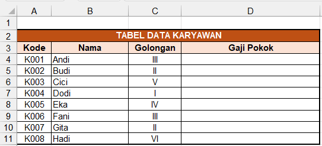
-
Tabel Referensi Golongan & Gaji:
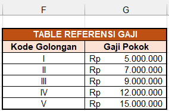
-
Gunakan VLOOKUP untuk mengisi gaji otomatis:
- Pada sel D4 ketik:
=VLOOKUP(C4;$F$4:$G$8;2;FALSE) - Salin sel D4 - D11 atau klik 2x pada kotak kecil di pojok kanan di sel D4.
- Perhatikan: data "II" (dengan spasi) dan "VI" akan menghasilkan error
#N/Akarena tidak ditemukan di tabel referensi.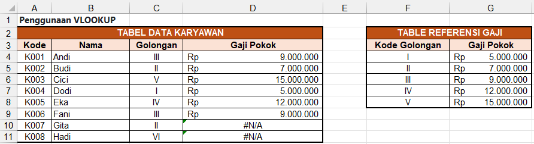
- Pada sel D4 ketik:
-
Format Gaji:
- Blok sel D4-D11.
- Tab Home → Number → pilih Currency atau Accounting dengan simbol Rp.
Penjelasan Rumus:- VLOOKUP:
=VLOOKUP(lookup_value, table_array, col_index_num, [range_lookup])
→C4= nilai yang dicari (golongan)
→$F$4:$G$8= tabel referensi (absolut agar tidak berubah saat disalin)
→2= kolom ke-2 dari tabel referensi (Gaji Pokok)
→FALSE= mencari kecocokan tepat (exact match (cocok persis))
-
Tambahkan IFERROR untuk menangani error:
Ubah rumus yang sama di D4 menjadi versi yang lebih aman:
- Pada sel D4 ketik:
=IFERROR(VLOOKUP(C4;$F$4:$G$8;2;FALSE);"Golongan tidak ditemukan") - Salin ke bawah hingga D11.
- Sekarang data " II" (spasi) dan "VI" akan menampilkan teks "Golongan tidak
ditemukan" bukan
error
#N/A.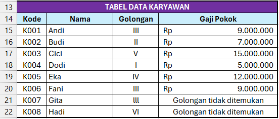
Penjelasan Rumus:- IFERROR:
=IFERROR(value, value_if_error)
→ Jika VLOOKUP menghasilkan error (#N/A), tampilkan teks "Golongan tidak ditemukan".
- Pada sel D4 ketik:
-
Tingkatkan pesan error dengan COUNTIF + VLOOKUP:
Ubah lagi rumus di D4 agar pesan error lebih informatif (menampilkan golongan yang salah):
- Pada sel D4 ketik:
=IF(COUNTIF($F$4:$F$8;C4)=0;"Golongan '"&C4&"' tidak ditemukan";VLOOKUP(C4;$F$4:$G$8;2;FALSE)) - Salin ke bawah hingga D11.
- Sekarang data " II" akan menampilkan "Golongan ' II' tidak ditemukan" dan "VI" menampilkan "Golongan 'VI' tidak ditemukan".
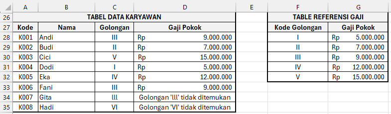
- Pada sel D4 ketik:
Tips:- Selalu gunakan
FALSEpada VLOOKUP untuk pencarian exact match (cocok persis), terutama untuk kode/golongan. - Gunakan referensi absolut
$pada tabel referensi agar tidak bergeser saat rumus disalin. Untuk cara cepat absolut$, drag range kemudian tekan F4 - IFERROR sangat berguna untuk membuat laporan yang rapi tanpa menampilkan error.
- Fungsi
-
Lanjutan 2: Buat tabel
data nilai siswa dengan tabel referensi nilai dalam bentuk
horizontal. Gunakan
=HLOOKUPuntuk mencari predikat,=INDEX + MATCHuntuk pencarian dua-arah (two-way lookup), dan=XLOOKUPuntuk pencarian modern.Kompetensi yang Dipelajari:- Fungsi
HLOOKUP()untuk pencarian horizontal. - Fungsi
INDEX()+MATCH()untuk two-way lookup. - Fungsi
XLOOKUP()alternatif modern VLOOKUP/HLOOKUP. - Perbandingan ketiga metode pencarian.
Buat 3 Tabel Referensi + Tabel Data Siswa-
Tabel 1 — Referensi Predikat Horizontal (baris 13-14):
Digunakan oleh HLOOKUP. Baris 13 = batas bawah nilai, Baris 14 = predikat.
Range:A B C D E 13 0 60 70 80 90 14 E D C B A $A$13:$E$14. Nilai 0-59 → E, 60-69 → D, 70-79 → C, 80-89 → B, 90+ → A. -
Tabel 2 — Data Siswa (baris 2-10, kolom A-F):
No (A) Nama (B) Nilai (C) Predikat (D) Nilai Huruf (E) Status (F) 1 Andi 85 (diisi dengan rumus) 2 Budi 92 (diisi dengan rumus) 3 Cici 67 (diisi dengan rumus) 4 Dodi 45 (diisi dengan rumus) 5 Eka 78 (diisi dengan rumus) 6 Fani 55 (diisi dengan rumus) 7 Gita 73 (diisi dengan rumus) 8 Hadi 88 (diisi dengan rumus) -
Tabel 3 — Referensi Nilai Huruf / Matriks (baris 17-25):
Digunakan oleh INDEX+MATCH. Kolom A = Nama, Kolom B-F = Kategori A/B/C/D/E.
Range data:A (baris) B C D E F 17 (kosong) A B C D E 18 Andi 85 90 78 92 88 19 Budi 80 88 75 85 92 20 Cici 70 72 67 80 85 21 Dodi 50 55 45 60 65 22 Eka 78 82 72 85 88 23 Fani 55 60 50 65 70 24 Gita 73 78 68 80 85 25 Hadi 88 92 82 90 95 $B$18:$F$25, Range nama:$A$18:$A$25, Range header:$B$17:$F$17. -
Tabel 4 — Referensi Status Kelulusan (kolom H-I):
Digunakan oleh XLOOKUP. Kolom H = batas bawah nilai, Kolom I = status.
Range:Batas Nilai (H) Status (I) 0 Tidak Lulus 60 Lulus 75 Lulus Baik 85 Lulus Memuaskan 95 Lulus Terpuji $H$4:$H$8(nilai) dan$I$4:$I$8(status).
Tabel Data Siswa (gambar):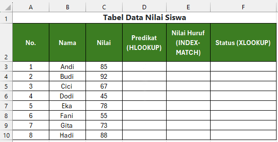
Langkah Pengerjaan:- Pada sel D3 ketik:
=HLOOKUP(C3;$A$13:$E$14;2;TRUE) - Salin ke bawah hingga D10.
- Parameter
TRUE(range lookup) karena nilai dicocokkan ke dalam rentang (0-59, 60-69, 70-79, 80-89, 90+). - HLOOKUP:
=HLOOKUP(lookup_value, table_array, row_index_num, [range_lookup])
→ Mirip VLOOKUP tetapi mencari secara horizontal (baris pertama tabel sebagai kunci).
→TRUEuntuk pencarian perkiraan (range),FALSEuntuk exact match (cocok persis). -
Gunakan INDEX + MATCH untuk two-way lookup (Nilai Huruf):
- Pada sel E3 ketik:
=INDEX($B$18:$F$25; MATCH(B3;$A$18:$A$25;0); MATCH(D3;$B$17:$F$17;0)) - Penjelasan: INDEX mengambil nilai dari range tabel, MATCH pertama mencari baris berdasarkan nama, MATCH kedua mencari kolom berdasarkan kategori.
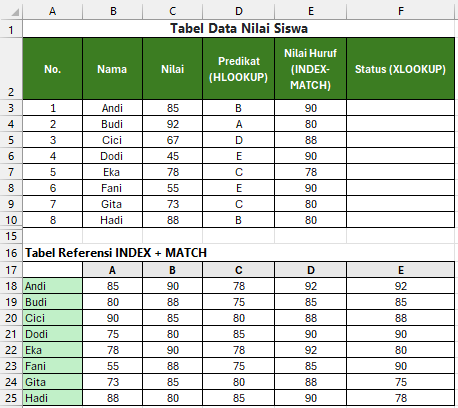
Penjelasan Rumus:- INDEX + MATCH:
=INDEX(array, MATCH(row_value, row_array, 0), MATCH(col_value, col_array, 0))
→ Kombinasi ini lebih fleksibel daripada VLOOKUP karena bisa mencari ke kiri atau ke kanan.
→INDEXmengambil nilai dari array pada baris dan kolom tertentu.
→MATCHmencari posisi (baris/kolom) dari nilai yang dicari.
- Pada sel E3 ketik:
-
Gunakan XLOOKUP untuk status kelulusan:
- Pada sel F3 ketik:
=XLOOKUP(C3;$H$4:$H$8;$I$4:$I$8;"Tidak Valid";-1) - Penjelasan singkat:
- XLOOKUP mencari nilai
C3(85) di$H$4:$H$8. - Karena tidak ada nilai 85 tepat di kolom H, dengan
-1ia mencari nilai terdekat yang lebih kecil — yaitu 75 → mengembalikan "Lulus Baik". - Parameter
-1(match_mode) berarti exact match (cocok persis) atau terdekat lebih kecil — sama sepertiTRUEdi VLOOKUP untuk rentang nilai. - Jika nilai di bawah 0, mengembalikan "Tidak Valid".
- XLOOKUP mencari nilai
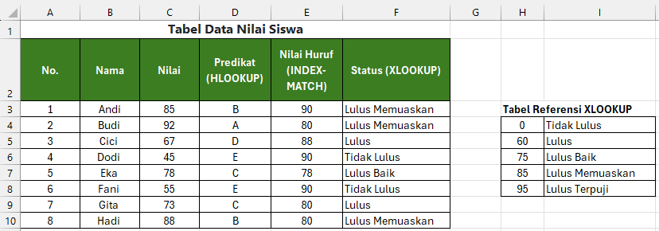
Penjelasan Rumus:- XLOOKUP:
=XLOOKUP(lookup_value, lookup_array, return_array, [if_not_found], [match_mode], [search_mode])
→ Fungsi modern pengganti VLOOKUP/HLOOKUP (tersedia Excel 365/2021+).
→match_mode: 0 = exact, -1 = exact atau terdekat lebih kecil, 1 = exact atau terdekat lebih besar, 2 = wildcard.
→ Tidak memerlukan referensi absolut yang rumit dan bisa mencari ke kiri.
- Pada sel F3 ketik:
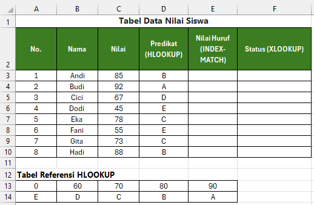
Penjelasan Rumus:Perbandingan:Fungsi Kelebihan Kekurangan HLOOKUP Sederhana untuk data horizontal Hanya lookup di baris pertama; tidak bisa ke kiri INDEX+MATCH Fleksibel (two-way, lookup ke kiri) Rumus lebih panjang; kurangi readable XLOOKUP Modern, fleksibel, built-in error handling Hanya di Excel 365/2021+ Tips:- Gunakan
TRUEpada HLOOKUP jika data referensi berupa rentang nilai (seperti predikat). - INDEX+MATCH sangat berguna untuk two-way lookup (mencari berdasarkan baris DAN kolom).
- XLOOKUP adalah rekomendasi terbaru — dukung dengan catatan versi Excel yang mendukung.
- Selalu gunakan referensi absolut
$pada tabel referensi.
- Fungsi
-
Dasar: Buat Column
chart penjualan 6 bulan. Tambahkan judul, label sumbu, dan
data label. Ubah warna kolom menjadi biru gradasi.
Kompetensi yang Dipelajari:
- Membuat Column chart dari data tabel.
- Menambahkan judul chart, label sumbu, dan data label.
- Mengubah warna dan gaya chart.
- Memformat chart agar profesional.
Tabel Data Penjualan 6 BulanBuat tabel berikut di sheet Excel Anda sebelum membuat chart.
A1: Bulan, B1: Penjualan. Data diisi pada baris 2–7.Bulan (A) Penjualan (B) Jan 12.000.000 Feb 15.000.000 Mar 11.000.000 Apr 18.000.000 Mei 14.000.000 Jun 16.000.000 Langkah Pengerjaan:- Blok data A1:B7.
-
Insert Column Chart:
- Tab Insert → grup Charts → pilih Clustered
Column (kolom pertama).
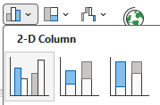
- Chart akan langsung muncul di sheet.
-
Hasil:
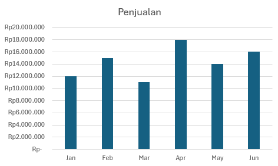
- Tab Insert → grup Charts → pilih Clustered
Column (kolom pertama).
-
Tambahkan judul chart:
- Klik 2x pada judul chart (default: "Chart Title").
- Ketik: Penjualan 6 Bulan Pertama.
-
Tambahkan label sumbu:
- Klik Chart 2x akan menampilkan Tab Chart Design → Add Chart Element.
- Atau klik Chart kemudian klik di kanan atas Chart → centang Axis Titles
- Pilih Axis Titles → Primary Horizontal → ketik: Bulan.
- Pilih Axis Titles → Primary Vertical → ketik: Nominal (Rp).
-
Tambahkan Data Label:
- Klik Chart 2x akan menampilkan Tab Chart Design → Add Chart Element.
- Pilih Data Labels → Outside End.
- Hasil:
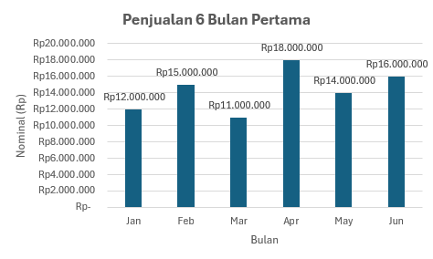
- Ubah warna kolom menjadi biru gradasi:
- Klik salah satu kolom di Chart (semua kolom akan terseleksi).
- Klik kanan → pilih Format Data Series.
- Pilih Fill → Gradient fill.
- Atur warna: Light Blue ke Dark Blue.
- Atur arah gradasi (misal: Linear Down).
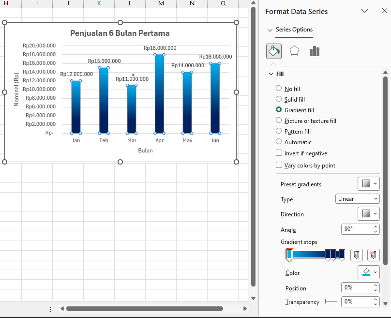
- Hasil:
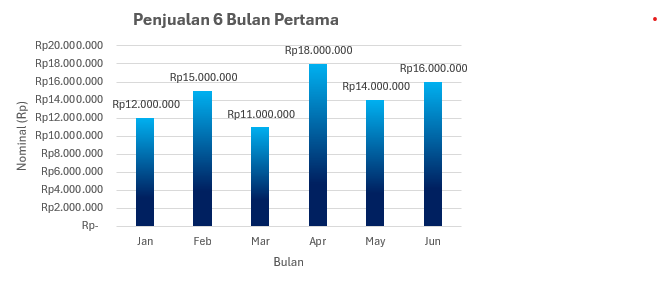
-
Rapikan chart:
- Tambahkan border pada chart area jika perlu.
- Sesuaikan ukuran font judul dan label.
-
Menengah: Buat
multi-series chart (Column + Line) untuk target vs
realisasi. Terapkan Data Bars pada sel realisasi. Gunakan
Icon Sets (hijau ≥ target, kuning = 90%, merah < 90%).
Kompetensi yang Dipelajari:
- Membuat combo chart (Column + Line) / multi-series chart.
- Conditional Formatting: Data Bars.
- Conditional Formatting: Icon Sets.
- Mengelola beberapa series dalam satu chart.
Tabel Data Target vs RealisasiBuat tabel berikut di sheet Excel Anda.
A1: Bulan, B1: Target, C1: Realisasi. Data diisi pada baris 2–7.Bulan (A) Target (B) Realisasi (C) Jan 15.000.000 14.000.000 Feb 15.000.000 16.000.000 Mar 15.000.000 13.500.000 Apr 20.000.000 19.000.000 Mei 20.000.000 18.000.000 Jun 20.000.000 21.000.000 Langkah Pengerjaan:-
Buat Column Chart:
- Blok A1:C7 → Insert →
Clustered Column.
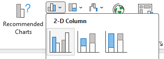
- Target dan Realisasi tampil sebagai 2 kolom berbeda.
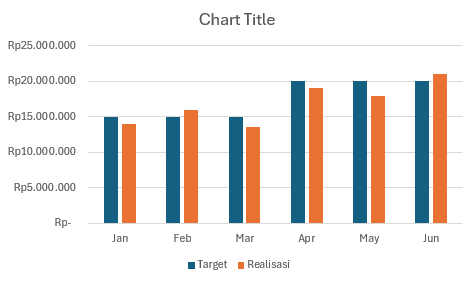
- Blok A1:C7 → Insert →
Clustered Column.
-
Ubah seri Realisasi menjadi Line:
- Klik kanan pada Chart → Tab Chart Design → Change Chart
Type.
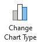
- Pilih Line with Markers untuk seri Realisasi.
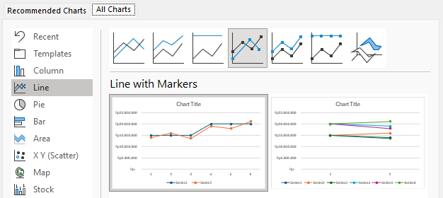
- Klik OK.
- Hasil:
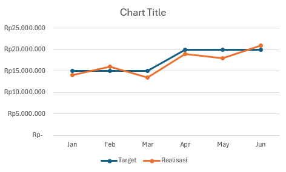
- Klik kanan pada Chart → Tab Chart Design → Change Chart
Type.
-
Tambahkan judul chart:
- Klik 2x pada judul chart (default: "Chart Title").
- Ketik: Target vs Realisasi 2025.
-
Tambahkan label sumbu:
- Klik Chart 2x akan menampilkan Tab Chart Design → Add Chart Element.
- Atau klik Chart kemudian klik di kanan atas Chart → centang Axis Titles
- Pilih Axis Titles → Primary Horizontal → ketik: Bulan.
- Pilih Axis Titles → Primary Vertical → ketik: Nominal (Rp).
-

-
Terapkan Data Bars pada sel Realisasi:
- Blok C2:C7.
- Tab Home → Conditional Formatting.
- Pilih Data Bars → pilih warna misal Blue Data Bar.
- Hasil:
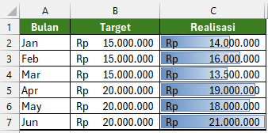
-
Buat kolom bantu persentase pencapaian:
- Pada sel D1 ketik: %
- Pada sel D2 ketik rumus:
=C2/B2 - Salin rumus ke bawah hingga sel D7.
- Blok D2:D7 → Tab Home → grup Number → pilih % Percentage.
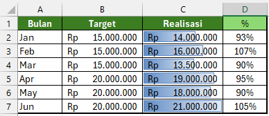
-
Terapkan Icon Sets pada kolom persentase:
- Blok D2:D7.
- Tab Home → Conditional Formatting → Icon Sets → pilih 3 Traffic Lights (Unrimmed).
- Klik Conditional Formatting → Manage Rules → pilih rule → Edit Rule.
- Ubah Type menjadi Percent untuk semua threshold.
- Atur: hijau ≥ 100, kuning ≥ 90, merah < 90.
- Klik OK.
- Hasil:
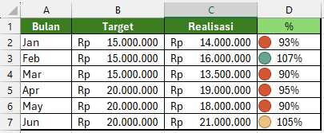
Penjelasan:- Target — Nilai penjualan yang direncanakan/ditargetkan per bulan (angka acuan).
- Realisasi — Nilai penjualan yang benar-benar tercapai pada bulan tersebut (kenyataan di lapangan).
- % (Persentase) — Perbandingan realisasi terhadap target, dihitung
dengan rumus
=Realisasi/Target.
→ ≥ 100% = target tercapai atau terlampaui.
→ 90% – 99% = hampir mencapai target.
→ < 90% = belum mencapai target, perlu evaluasi.
-
Lanjutan: Buat mini
dashboard 1 sheet: Line chart tren penjualan, Pie chart
komposisi produk, Bar chart per region. Tambahkan Color
Scales gradasi pada data. Gunakan Slicer untuk memfilter
chart secara interaktif.
Kompetensi yang Dipelajari:
- Membuat Line chart, Pie chart, dan Bar chart.
- Color Scales (Conditional Formatting).
- Menggunakan Slicer untuk interaktivitas chart.
- Merancang tata letak mini dashboard dalam 1 sheet.
- Fungsi SUMIF untuk membuat tabel rekap.
Apa itu Mini Dashboard?Mini dashboard adalah kumpulan beberapa chart dalam 1 sheet untuk melihat data dari berbagai sudut pandang sekaligus.
- Line chart — melihat tren naik/turun penjualan dari bulan ke bulan.
- Pie chart — melihat komposisi/kontribusi tiap produk terhadap total penjualan.
- Bar chart — membandingkan penjualan antar region secara visual.
- Slicer — tombol filter interaktif; klik region/produk, semua chart langsung berubah.
Data Penjualan Multi-DimensiBuat tabel berikut di sheet Excel Anda (baris 1 = header, baris 2–13 = data).
Bulan (A) Region (B) Produk (C) Penjualan (D) Jan Jakarta Laptop 50.000.000 Jan Jakarta HP 30.000.000 Jan Bandung Laptop 25.000.000 Jan Bandung HP 20.000.000 Feb Jakarta Laptop 55.000.000 Feb Jakarta HP 28.000.000 Feb Bandung Laptop 27.000.000 Feb Bandung HP 22.000.000 Mar Jakarta Laptop 60.000.000 Mar Jakarta HP 32.000.000 Mar Bandung Laptop 30.000.000 Mar Bandung HP 25.000.000 Langkah Pengerjaan:-
Buat tabel rekap per bulan (untuk Line Chart):
- F1: Bulan, G1: Total
- F2: Jan, F3: Feb, F4: Mar
- G2 ketik:
=SUMIF($A$2:$A$13;F2;$D$2:$D$13) - Salin G2 ke G3 dan G4 → hasil total penjualan Jan–Mar.
- Hasil:
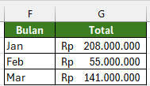
-
Buat Line Chart:
- Blok F1:G4 → Tab Insert → pilih
Line Chart.
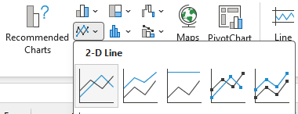
- Klik 2x judul chart → ganti: Tren Penjualan per Bulan.
- Hasil:
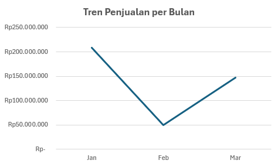
- Blok F1:G4 → Tab Insert → pilih
Line Chart.
-
Buat tabel rekap per produk (untuk Pie Chart):
- I1: Produk, J1: Total
- I2: Laptop, I3: HP
- J2 ketik:
=SUMIF($C$2:$C$13;I2;$D$2:$D$13) - Salin J2 ke J3.
- Hasil:
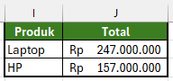
-
Buat Pie Chart:
- Blok I1:J3 → Insert → Pie Chart.
- Ganti judul: Komposisi Penjualan per Produk.
- Klik pada Chart Pie → klik kanan pilih Add Data Label > Add Data Label → Klik pada Chart Pie kembali → Format Data Labels → centang Percentage. Jika masih menampilkan nilai coba centang Value kemudian hilangkan centang Value kembali agar tampilan menampilkan % bukan menampilkan nilai uang.
-
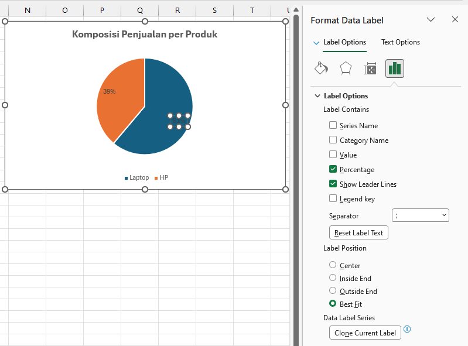
-
Untuk merubah warna teks persentase:
Klik pada teks prosentase → Font... → Font color pilih warna putih → OK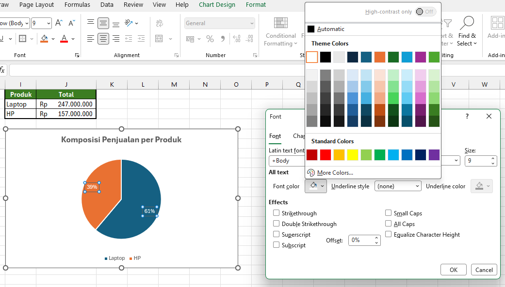
-
Hasil:
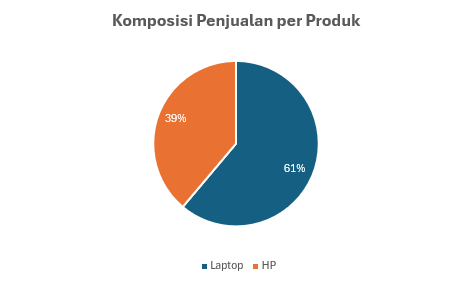
-
Buat tabel rekap per region (untuk Bar Chart):
- L1: Region, M1: Total
- L2: Jakarta, L3: Bandung
- M2 ketik:
=SUMIF($B$2:$B$13;L2;$D$2:$D$13) - Salin M2 ke M3.
- Hasil:
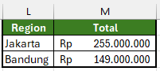
-
Buat Bar Chart:
- Blok L1:M3 → Insert → pilih
Clustered Bar (ikon
bar horizontal).
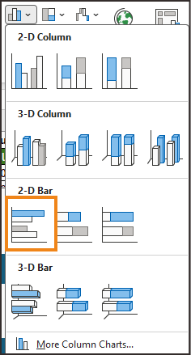
- Ganti judul: Penjualan per Region.
- Hasil:
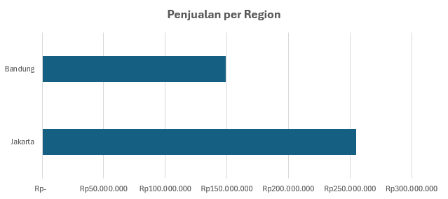
- Blok L1:M3 → Insert → pilih
Clustered Bar (ikon
bar horizontal).
-
Atur tata letak dashboard dalam 1 sheet:
- Seret chart ke posisi: Line di kiri atas, Pie di kanan atas, Bar di kiri bawah.
- Beri jarak rapi, sesuaikan ukuran chart agar proporsional.
- Tab View → hilangkan centang Gridlines agar tampak seperti dashboard.
-
Terapkan Color Scales pada data Penjualan:
- Blok D2:D13.
- Tab Home → Conditional Formatting → Color Scales.
- Pilih Green - Yellow - Red Color Scale.
- Otomatis: nilai
- Hijau : Tertinggi
- Kuning : Sedang
- Merah : Terendah
- Hasil:
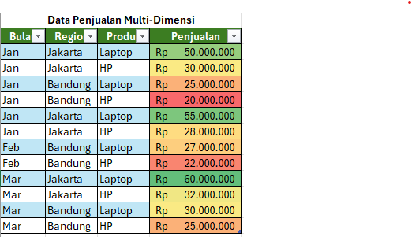
-
Ubah data menjadi Table (syarat Slicer):
- Blok A1:D13 → tekan Ctrl+T → klik OK.
- Sekarang data berbentuk Table (ada ikon filter di setiap header).
-
Tambahkan Slicer untuk filter interaktif:
- Klik di dalam Table → Tab Table Design → Insert Slicer.
- Centang Region dan Produk → klik OK.
- Akan muncul 2 kotak Slicer: Region dan Produk.
- Coba klik "Jakarta" di Slicer Region → semua chart otomatis menampilkan data Jakarta saja.
- Klik ikon filter silang di pojok kanan atas Slicer untuk menghapus filter.
- Hasil:
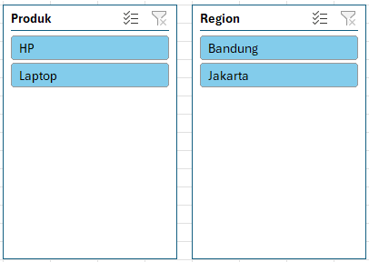
Tampilan Mini Dashboard:
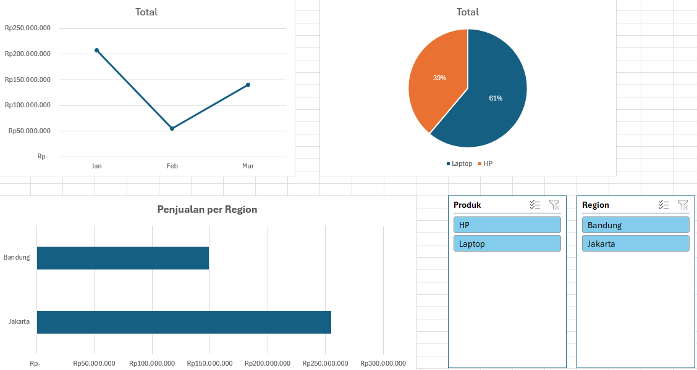
-
Dasar: Buat tabel
data 20 baris. Lakukan sorting A-Z berdasarkan nama, lalu
sorting multi-level (kota → nama). Gunakan Filter untuk
menampilkan data tertentu.
Kompetensi yang Dipelajari:
- Sorting data A-Z / Z-A.
- Multi-level sorting (Kota → Nama).
- Filter data untuk menampilkan baris tertentu.
- Mengelola data tabel dengan cepat.
Tabel Data Karyawan 20 BarisBuat tabel berikut di sheet Excel Anda. Kolom A–E, baris 1 = header, baris 2–21 = data (20 karyawan).
Anda bisa menambah/mengubah data sendiri. Yang penting ada kolom: No, Nama, Kota, Usia, Divisi.No (A) Nama (B) Kota (C) Usia (D) Divisi (E) 1 Andi Jakarta 28 IT 2 Budi Bandung 32 Marketing 3 Cici Jakarta 25 HRD 4 Dodi Surabaya 30 IT 5 Eka Bandung 27 Marketing 6 Fani Jakarta 35 HRD 7 Gita Surabaya 29 Finance 8 Hadi Jakarta 31 IT 9 Ira Bandung 26 Finance 10 Joko Surabaya 33 Marketing 11 Kira Jakarta 24 IT 12 Lina Bandung 28 HRD 13 Maya Surabaya 30 Finance 14 Nana Jakarta 27 Marketing 15 Omar Bandung 34 IT 16 Petri Surabaya 26 HRD 17 Qori Jakarta 29 Finance 18 Rina Bandung 31 Marketing 19 Sari Surabaya 25 IT 20 Tono Jakarta 32 HRD Langkah Pengerjaan:-
Sorting A-Z berdasarkan Nama:
- Blok seluruh data (A1:E21) atau klik di dalam tabel.
- Tab Data → Sort A to Z (ikon A↓Z).
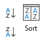
- Data akan terurut berdasarkan nama secara alfabet.
-
Sorting multi-level (Kota → Nama):
- Klik di dalam tabel → Tab Data → Sort.
- Pada dialog Sort:
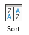
- Sort by: Kota → A to Z.
- Klik Add Level.
- Then by: Nama → A to Z.
- Klik OK → data akan diurutkan berdasarkan kota, lalu per nama dalam kota yang
sama.
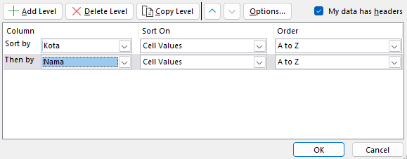
-
Gunakan Filter:
- Klik di dalam tabel → Tab Data → Filter (ikon
corong).
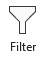
- Panah filter akan muncul di setiap header kolom.
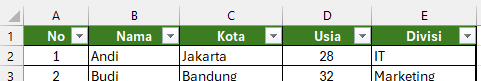
- Klik panah pada kolom Kota → centang hanya Jakarta → OK.
- Data hanya menampilkan karyawan dari Jakarta.
- Klik panah pada kolom Divisi → centang hanya IT → OK.
- Sekarang data menampilkan karyawan IT dari Jakarta.
- Untuk menghapus filter: klik panah → Clear Filter from ....
- Klik di dalam tabel → Tab Data → Filter (ikon
corong).
-
Menengah: Buat
PivotTable dari data penjualan: rekap total per region
& per produk. Tambahkan PivotChart Column. Gunakan
Slicer untuk filter region interaktif.
Kompetensi yang Dipelajari:
- Membuat PivotTable dari data mentah.
- Mengatur Row, Column, Values, dan Filter di PivotTable.
- Membuat PivotChart dari PivotTable.
- Menambahkan Slicer untuk filter interaktif.
Data Penjualan per Region & Produk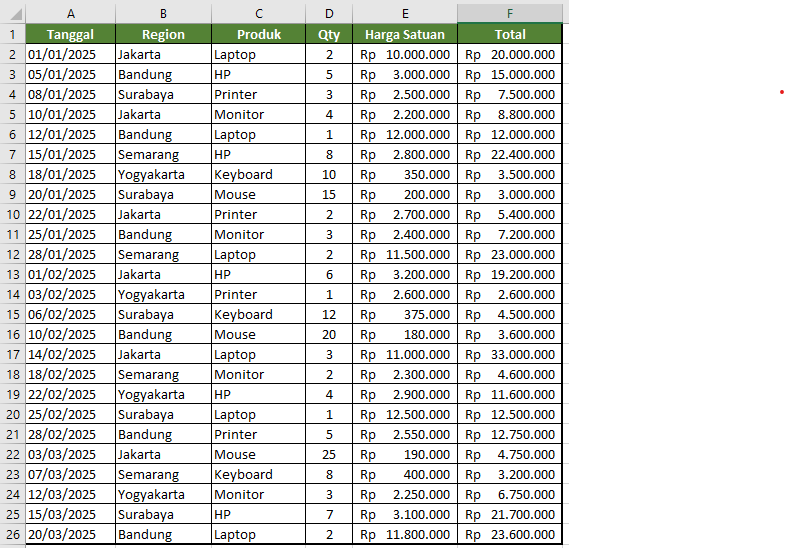
Langkah Pengerjaan:-
Download & buka file latihan:
- Klik tombol "Contoh Latihan" di bawah halaman ini.
- Buka file
Data-Penjualan-per-Region-dan-Produk.xlsxyang sudah didownload. - File berisi data penjualan dengan kolom: Tanggal, Region, Produk, Qty, Harga Satuan, dan Total (20+ baris).
-
Buat PivotTable:
- Klik di dalam tabel data → Tab Insert → PivotTable.
- Pilih New Worksheet → OK.
-
Atur PivotTable Fields:
- Drag Region ke Rows.
- Drag Produk ke Columns.
- Drag Total ke Values (pastikan fungsinya Sum).
- Sekarang PivotTable menampilkan total penjualan per region (baris) dan per produk (kolom).
-
Buat PivotChart:
- Klik di dalam PivotTable → Tab PivotTable Analyze → PivotChart.
- Pilih Clustered Column → OK.
- Chart akan menampilkan perbandingan penjualan per region per produk.
-
Tambahkan Slicer untuk filter region:
- Klik di dalam PivotTable → Tab PivotTable Analyze → Insert Slicer.
- Centang Region → OK.
- Slicer akan muncul sebagai kotak dengan tombol region.
- Klik "Jakarta" → PivotTable dan PivotChart akan menampilkan hanya data Jakarta.
- Klik tombol dengan ikon silang di Slicer untuk menghapus filter.
Hasil Akhir:Setelah selesai, Anda akan memiliki:
- PivotTable yang merangkum total penjualan per Region (baris) dan per Produk (kolom).
- PivotChart Column yang menampilkan perbandingan visual penjualan.
- Slicer untuk menyaring data berdasarkan Region secara interaktif.
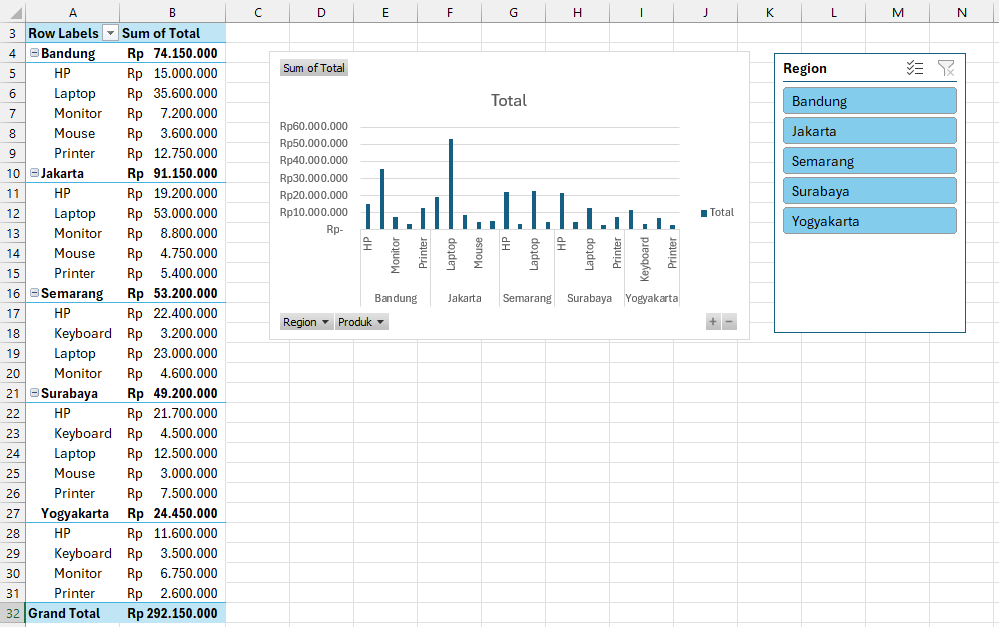
-
Lanjutan (Final):
Buat aplikasi pencatatan pengeluaran (20+ baris): dropdown
kategori (Data Validation), IF untuk kategori otomatis,
PivotTable rekap per kategori + Pie chart + Conditional
Formatting (merah jika > rata-rata). Gunakan Slicer
untuk filter bulan.
Kompetensi yang Dipelajari:
- Data Validation (Dropdown list).
- Fungsi IF untuk kategori otomatis.
- PivotTable dan PivotChart (Pie).
- Conditional Formatting (merah jika > rata-rata).
- Slicer untuk filter bulan interaktif.
- Menggabungkan semua skill Excel dalam satu project.
Struktur Aplikasi Pencatatan PengeluaranAplikasi terdiri dari beberapa bagian:
- Sheet "Data Pengeluaran": kolom Tanggal, Kategori (dropdown), Deskripsi, Jumlah, Bulan (TEXT), Jenis (IF).
- PivotTable di sheet terpisah: rekap jumlah per kategori.
- Pie Chart dari PivotTable: visualisasi proporsi pengeluaran.
- Slicer: filter interaktif berdasarkan bulan.
- Conditional Formatting: sorot merah pengeluaran di atas rata-rata.
Data PengeluaranBuat tabel berikut di sheet Excel Anda (baris 1 = header, baris 2–21 = data).
Anda bisa menambah/mengubah data sendiri. Yang penting ada kolom: Tanggal, Kategori, Deskripsi, Jumlah. Kategori harus dipilih dari dropdown (Makanan, Transport, Belanja, Tagihan, Hiburan).Tanggal (A) Kategori (B) Deskripsi (C) Jumlah (D) 01/01/2025 Makanan Nasi goreng 25.000 02/01/2025 Transport Bensin 50.000 03/01/2025 Belanja Sabun 15.000 05/01/2025 Tagihan Listrik 250.000 07/01/2025 Hiburan Nonton bioskop 75.000 10/01/2025 Makanan Mie ayam 20.000 12/01/2025 Transport Grab bike 18.000 15/01/2025 Belanja Sepatu 350.000 18/01/2025 Tagihan Internet 200.000 20/01/2025 Makanan Kopi 15.000 01/02/2025 Hiburan Spotify 55.000 03/02/2025 Transport Parkir 10.000 05/02/2025 Makanan Soto betawi 30.000 08/02/2025 Belanja Buku 85.000 10/02/2025 Tagihan Air 75.000 12/02/2025 Transport Bensin 50.000 15/02/2025 Makanan Bakso 22.000 18/02/2025 Hiburan Game 100.000 20/02/2025 Belanja Baju 200.000 25/02/2025 Tagihan Listrik 275.000 Langkah Pengerjaan:-
Buat sheet utama "Data Pengeluaran" dengan kolom:
- A1: Tanggal, B1: Kategori, C1: Deskripsi, D1: Jumlah
-
Terapkan Conditional Formatting (merah jika > rata-rata):
- Blok kolom Jumlah (D2:D30) di sheet data.
- Tab Home → Conditional Formatting → Top/Bottom Rules.
- Pilih Above Average.
- Pilih format Light Red Fill with Dark Red Text.
- Klik OK → semua pengeluaran di atas rata-rata akan berwarna
merah.
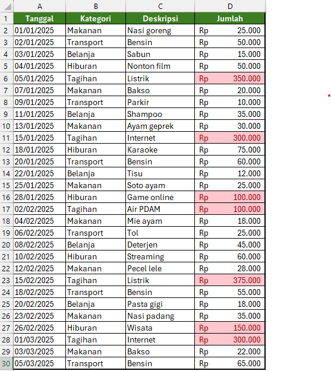
-
Buat dropdown kategori dengan Data Validation:
- Di sel terpisah (misal H1:H5) ketik daftar kategori: Makanan, Transport, Belanja, Tagihan, Hiburan.
- Blok B2:B30 → Tab Data → cari grup Data Tools → klik Data Validation (ikon centang di kotak).
- Tips Excel 2024: Jika tidak menemukan tombolnya, gunakan shortcut Alt + A + V (tekan berurutan), atau ketik "Data Validation" di Tell Me (kotak search di atas ribbon).
- Allow: List → Source: =$H$1:$H$5 → OK.
- Sekarang kolom Kategori memiliki dropdown pilihan.
-
Isi 20+ baris data pengeluaran:
- 01/01/2025 — Makanan — Nasi goreng — 25000
- 02/01/2025 — Transport — Bensin — 50000
- 03/01/2025 — Belanja — Sabun — 15000
- ... dan seterusnya untuk 2-3 bulan (Januari, Februari, Maret).
-
Buat kolom bantu untuk Bulan (opsional jika ingin filter per bulan):
- Pada E1 ketik: Bulan
- Pada E2 ketik:
=TEXT(A2,"MMMM")→ salin ke bawah. - Ini akan menghasilkan nama bulan dari kolom Tanggal.
-
Buat kolom "Jenis" dengan IF untuk kategori otomatis:
- Pada F1 ketik: Jenis
- Pada F2 ketik:
=IF(OR(B2="Makanan",B2="Tagihan",B2="Transport"),"Kebutuhan","Keinginan")→ Enter, lalu salin ke bawah. - IF ini otomatis mengelompokkan: "Kebutuhan" (Makanan, Tagihan,
Transport) atau "Keinginan" (Belanja, Hiburan).
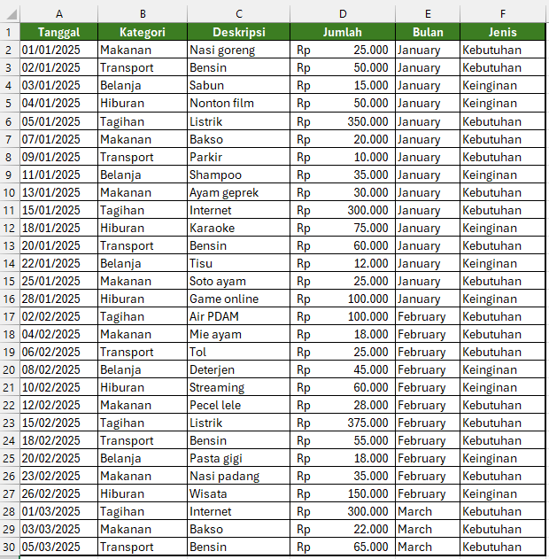
-
Buat PivotTable rekap per kategori:
- Klik di dalam tabel data (pastikan range mencakup kolom A sampai F) → Insert → PivotTable → From Table/Range → New Worksheet → OK.
- Centang Kategori.
- Centang Jumlah ke Values (Sum).
- Sort PivotTable descending berdasarkan nilai untuk melihat kategori pengeluaran
terbesar.
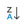
-
Buat Pie Chart dari PivotTable:
- Klik pada tabel PivotTable
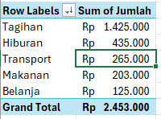
- Klik Tab PivotTable Analyze → PivotChart.
- Pilih Pie → OK.
- Klik pada lingkaran Chart Pie, klik kanan Add Data Label > Add Data Label
- Kembali Klik pada lingkaran Chart Pie, klik kanan Format Data Label
- Pada kotak Format Data Label, beri centang Category
Name dan Percentage hapus centang
Value.
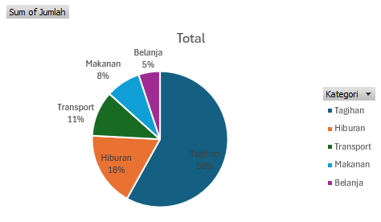
- Klik pada tabel PivotTable
-
Tambahkan Slicer untuk filter bulan:
- Klik di dalam PivotTable → PivotTable Analyze →
Insert Slicer.
- Centang Bulan (dari kolom bantu) → OK.
- Klik "Januari" → PivotTable dan Pie chart
menampilkan hanya data Januari.
- Klik di dalam PivotTable → PivotTable Analyze →
Insert Slicer.
Hasil Akhir Final Project:Setelah selesai, Anda akan memiliki:
- Data pengeluaran 20+ baris dengan dropdown kategori dan kolom bantu otomatis (Bulan, Jenis).
- PivotTable rekap total pengeluaran per kategori, diurutkan dari terbesar.
- Pie Chart dengan label persentase dan nama kategori.
- Conditional Formatting merah pada sel Jumlah yang di atas rata-rata.
- Slicer untuk memfilter PivotTable dan Chart per bulan.
Ringkasan Skill yang Digunakan:- Data Entry & Formatting (Pertemuan 1)
- Fungsi IF, TEXT (Pertemuan 2)
- Chart & Conditional Formatting (Pertemuan 3)
- PivotTable, Slicer, Data Validation (Pertemuan 4)
Project ini menggabungkan seluruh materi dari Pertemuan 1-4.
Ringkasan
Microsoft Excel
Pertemuan 1-4
360 menit total